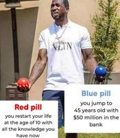

0
An anonymous reader quotes a report from the New York Times: A top Senate administrator on Monday gave aides the green light to use three artificial intelligence chatbots for official work, a reflection of how widespread the use of the products has become in workplaces around the globe. The chief information officer for the Senate sergeant-at-arms, who oversees the chamber's computers as well as security, said in a one-page memo reviewed by The New York Times that aides could use Google's Gemini chat, OpenAI's ChatGPT or Microsoft Copilot, which is already integrated into Senate platforms.
Copilot "can help with routine Senate work, including drafting and editing documents, summarizing information, preparing talking points and briefing material, and conducting research and analysis," the memo said. The document later added that "data shared with Copilot Chat stays within the secure Microsoft 365 Government environment and is protected by the same controls that safeguard other Senate data." It's unclear how widely AI is used in the Senate or how widespread it might become, as individual offices and committees set their own rules. The chamber has also not publicly released comprehensive guidance on chatbots, the report notes.
In contrast, the House has clearer policies allowing the general use of AI for limited internal tasks but restricting it from sensitive data or for being used for deepfakes and certain decision-making activities.
Read more of this story at Slashdot.
Meta plans to remove end-to-end encryption (E2EE) from Instagram direct messages by May 8, 2026. "Very few people were opting in to end-to-end encrypted messaging in DMs, so we're removing this option from Instagram in the coming months," says Meta. "Anyone who wants to keep messaging with end-to-end encryption can easily do that on WhatsApp." The Hacker News reports: The American company first began testing E2EE for Instagram direct messages in 2021 as part of CEO Mark Zuckerberg's "privacy-focused vision for social networking." The feature is currently "only available in some areas" and is not enabled by default. Weeks into the Russo-Ukrainian war in February 2022, the company made encrypted direct messaging available to all adult users in both countries. Last week, TikTok said it would not introduce E2EE, arguing it makes users less safe by preventing police and safety teams from being able to read direct messages if needed.
Read more of this story at Slashdot.
Iranian drone strikes shut down a major helium facility in Qatar, removing about 30% of global helium supply and raising concerns for the semiconductor industry, which relies on the gas for chip fabrication. "QatarEnergy declared force majeure on existing contracts on March 4, freeing it from supply obligations to customers," reports Tom's Hardware. The industry outlet Gasworld reports that no imminent restart is planned. From the report: Helium consultant Phil Kornbluth, speaking at a Gasworld webinar on March 4, said that if the outage extends beyond roughly two weeks, industrial gas distributors could be forced to relocate cryogenic equipment and revalidate supplier relationships, a process that could stretch over months regardless of when Qatari output resumes.
South Korea is among the most exposed countries, which, according to the Korea International Trade Association, imported 64.7% of its helium from Qatar in 2025. The country relies heavily on helium imports to cool silicon wafers during fabrication and is understood to have no viable substitute.
The country's Ministry of Trade, Industry and Resources has reportedly launched an investigation into supply and demand for 14 semiconductor materials and equipment types with high dependence on Middle Eastern sources, Nikkei reported on Wednesday. Bromine, which is used in circuit formation, is another big concern, with South Korea sourcing 90% of its imports from Israel, also party to the ongoing conflict in Iran.
Read more of this story at Slashdot.
AI services may not stay cheap for long, as companies like OpenAI and Anthropic are currently subsidizing usage to rapidly grow market share. As these companies move toward profitability and potential IPOs, Axios reports that investors will likely push them to increase prices and improve margins. An anonymous reader shares an excerpt from the report: Flashback: Silicon Valley has seen this movie before. The so-called "millennial lifestyle subsidy" meant VC money helped underwrite cheap Uber rides and DoorDash deliveries. Before that, Amazon built its base with low prices, free shipping and, for years, no sales tax in most states. Eventually, all of these companies had to charge enough to cover costs -- and make a profit.
Follow the money: The current iteration of AI subsidies won't last forever. Both OpenAI and Anthropic are widely expected to go public. Public investors will demand earnings growth and expanding margins. Even as chips get more efficient, total spending keeps rising. Labs need more capacity, more upgrades and more supply to meet demand.
The bottom line: The costs of AI will keep going down. But total spend from customers will need to keep going up if AI companies are going to become profitable and investors are ever going to get returns on their massive investments.
Read more of this story at Slashdot.
An anonymous reader quotes a report from Pitchfork: Earlier this week, the U.S. Department of Justice and Live Nation reached a settlement in the DOJ's antitrust lawsuit against the concert giant. During the trial, which lasted only a week, representatives for Live Nation had moved to exclude a collection of Slack direct messages from 2022 between two of the company's regional directors from the evidence presented to the jury. Bloomberg and a number of other publications have, as of today (March 12), successfully petitioned New York federal judge Arun Subramanian to release the chats.
The conversations are between Ben Baker, now head of ticketing for Venue Nation, and Jeff Weinhold, currently a senior director in the ticketing department. Baker and Weinhold joke about overcharging and price-gouging fans -- "Robbing them blind, baby," Baker brags in one exchange pertaining to a Kid Rock show in Tampa Bay -- as well as being able to raise prices on ancillary services such as parking seemingly at will. "These people are so stupid," Baker writes. "I almost feel bad taking advantage of them BAHAHAHAHAHA." Live Nation described the messages as "off-the-cuff banter, not policy, decision-making, or facts of consequence." In a statement the company has since added: "The Slack exchange from one junior staffer to a friend absolutely doesn't reflect our values or how we operate."
Read more of this story at Slashdot.
Apple will cut its App Store commission in China from 30% to 25% starting March 15, with small-business and mini-app rates dropping from 15% to 12%. AppleInsider reports: Chinese regulators have been back and forth with Apple in recent years over the 30% App Store commission. The latest publicly known pressure occurred after President Trump slammed the country with seemingly random and outrageous tariffs in 2025. While nothing much else has happened in the public eye in the year since, Apple has announced a new commission rate via its developer blog. The new rates go into effect on March 15.
The current standard 30% rate is dropping to 25% for in-app purchases and paid app transactions. The Small Business Program and Mini Apps Partner Program will see rates drop from 15% to 12%. That lower rate applies to auto-renewals of in-app purchase subscriptions after the first year. Mini Apps are for transactions found in super apps like those popularized in China. [...] Developers will need to sign the updated terms, but the new rates are applied automatically. It is unclear if these new changes will prevent regulatory action from China.
Read more of this story at Slashdot.
Mr. Dollar Ton shares a report from the Guardian: Angela Lipps, 50, spent nearly six months in jail after Fargo police identified her as a suspect in an organized bank fraud case using facial recognition software, according to south-east North Dakota news outlet InForum. Lipps told the outlet she had never been to North Dakota and did not commit the crimes. Lipps, a mother of three and grandmother of five, said she has lived most of her life in north-central Tennessee. She had never been on an airplane until authorities flew her to North Dakota last year to face charges.
In July, U.S. marshals arrested Lipps at her Tennessee home while she was babysitting four children. She said she was taken away at gunpoint and booked into a county jail as a fugitive from justice from North Dakota. "I've never been to North Dakota, I don't know anyone from North Dakota," Lipps told WDAY News. She remained in a Tennessee jail for nearly four months without bail while awaiting extradition. She was charged with four counts of unauthorized use of personal identifying information and four counts of theft.
According to Fargo police records obtained by WDAY News, detectives investigating bank fraud cases in April and May 2025 reviewed surveillance video of a woman using a fake U.S. army military ID to withdraw tens of thousands of dollars. The officers allegedly used facial recognition software to identify the suspect as Lipps. A detective reportedly wrote in court documents that Lipps appeared to match the suspect based on facial features, body type and hairstyle. Lipps told WDAY News that no one from the Fargo police department contacted her before the arrest. Lipps is now back home but says the experience has had lasting consequences. While jailed and unable to pay bills, Lipps lost her home, her car and her dog, she said. She also told WDAY News no one from the Fargo police department had apologized.
Read more of this story at Slashdot.
sdinfoserv writes: After running a Reddit clone for a couple of months, the Digg beta shut down again. The website is a splash memo from CEO Justin Mezzell, blaming the latest "Hard Reset" on bots. "Building on the internet in 2026 is different," writes Mezzell. "We learned that the hard way. Today we're sharing difficult news: we've made the decision to significantly downsize the Digg team..."
The decision was made after struggling to gain traction and an overwhelming influx of AI-driven bots and spam. "When the Digg beta launched, we immediately noticed posts from SEO spammers noting that Digg still carried meaningful Google link authority," says Mezzell. "Within hours, we got a taste of what we'd only heard rumors about. The internet is now populated, in meaningful part, by sophisticated AI agents and automated accounts. We knew bots were part of the landscape, but we didn't appreciate the scale, sophistication, or speed at which they'd find us."
"We banned tens of thousands of accounts. We deployed internal tooling and industry-standard external vendors. None of it was enough. When you can't trust that the votes, the comments, and the engagement you're seeing are real, you've lost the foundation a community platform is built on."
Despite the setback, Digg plans to rebuild with a smaller team, with founder Kevin Rose returning to work full-time on a new direction for the platform. "Starting the first week of April, Kevin will be putting his focus back on the company he built twenty+ years ago," writes Mezzell. "He'll continue as an advisor to True Ventures, but Digg will be his primary focus."
Slashback: The Rise of Digg.com
Read more of this story at Slashdot.
BrianFagioli shares a report from NERDS.xyz: Cloud storage company Backblaze has partnered with StorageReview to make a massive dataset containing 314 trillion digits of Pi publicly accessible. The digits were calculated by StorageReview in December 2025 after months of heavy computation designed to stress modern hardware. The dataset now hosted in the cloud weighs in at over 130TB, while the full working dataset used during the calculation reached about 2.1PB when intermediate checkpoints were included. The report notes that the Pi digits have been broken into roughly 200GB chunks to make it more practical for researchers or enthusiasts to download.
Here's what StorageReview founder Brian Beeler said about the project: "Pushing [Pi] to 314 trillion digits was far more than a headline number. It was a sustained, months-long computational challenge that stressed every layer of modern infrastructure, from high core-count CPUs to massive high-speed storage, and it gave us valuable insight into how extreme, real-world workloads behave at scale. Making this dataset available in the Backblaze cloud takes the project a step further by opening access to one of the largest raw outputs ever generated in a single-system calculation. Hosting multi-petabyte files for the broader community is no small feat, and we appreciate Backblaze stepping up to ensure researchers, developers, and enthusiasts can explore and build on this record-setting achievement."
Read more of this story at Slashdot.
Meta has delayed the release of its next major AI model after internal tests showed it lagging behind competing systems from Google, OpenAI, and Anthropic. The New York Times reports: The model, code-named Avocado, outperformed Meta's previous A.I. model and did better than Google's Gemini 2.5 model from March, two of the people said. But it has not performed as strongly as Gemini 3.0 from November, they said. As a result, Meta has delayed Avocado's release to at least May from this month, the people said. They added that the leaders of Meta's A.I. division had instead discussed temporarily licensing Gemini to power the company's A.I. products, though no decisions have been reached.
[...] It takes time to improve A.I. models, and Meta can still catch up to rivals, A.I. experts said. But a longer timeline has set in at the company, with Mr. Zuckerberg tempering expectations for Avocado in the past few months. "I expect our first models will be good, but more importantly will show the rapid trajectory we're on," he said on a call with investors in January. A Meta spokesperson said in a statement: "As we've said publicly, our next model will be good but, more importantly, show the rapid trajectory we're on, and then we'll steadily push the frontier over the course of the year as we continue to release new models. We're excited for people to see what we've been cooking very soon."
Read more of this story at Slashdot.
An anonymous reader quotes a report from Reuters: Milan prosecutors have requested trial for Amazon's European unit and four of its managers over alleged tax evasion worth around $1.38 billion, two sources with direct knowledge of the matter said on Thursday. The move is unprecedented for a case of this kind in Italy, as Amazon agreed in December to pay 527 million euros, including interest, to Italy's Revenue Agency to settle the tax dispute. In all previous cases involving other international groups, once a settlement was reached and payment made, prosecutors closed related criminal investigations, either through plea deals or by dropping the cases. This time, however, Milan prosecutors did not share the tax authority's approach and decided to press ahead with their probe, leading to a request that the suspects be sent to trial. After December's tax settlement, Amazon said it would "forcefully defend its position on the potential ungrounded criminal case." It added: "Unpredictable regulatory environments, disproportionate penalties, and protracted legal proceedings are increasingly affecting Italy's attractiveness as an investment destination."
Under what's described as a "VAT-avoidance algorithm," prosecutors accuse Amazon and four managers of enabling large-scale VAT evasion on goods sold in Italy between 2019 and 2021, allowing tens of thousands of non-EU marketplace sellers to sell goods in the country without clearly disclosing their identities. They allege that this helped the sellers avoid paying value-added tax. "Under Italian law, an intermediary offering goods for sale in Italy is jointly responsible for unpaid VAT by non-EU sellers operating through its platform," notes Reuters.
Read more of this story at Slashdot.
Early benchmarks show the A18 Pro-powered MacBook Neo beating every current x86 CPU in single-core Cinebench performance, including chips from Intel and AMD. Notebookcheck reports: We have performed a couple of benchmarks and were particularly impressed by the single-core performance. Not in the short Geekbench test, but in Cinebench 2024, where a single-core test takes about 10 minutes. The A18 Pro consumes between 3.5-4 Watts in this scenario and scores 147 points. This means it is faster than every other x86 processor in our database, including the two desktop processors Intel Core Ultra 9 285K & AMD Ryzen 9 9950X3D. This also means the MacBook Neo beats every modern mobile processor from AMD, Intel and also Qualcomm, even though the upcoming Snapdragon X2 chips should be a bit faster. The A18 Pro is also slightly faster than Apple's own M3 generation in this scenario. Further reading: ASUS Executive Says MacBook Neo is 'Shock' to PC Industry
Read more of this story at Slashdot.
A witness in a London High Court case was caught using smart glasses connected to his phone to receive real-time coaching while giving evidence during cross-examination. "In my judgement, from what occurred in court, it is clear that call was made, connected to his smart glasses, and continued during his evidence until his mobile phone was removed from him," said Judge Raquel Agnello KC. "Not only have I held that Jakstys was untruthful in denying his use of the smart glasses and his calls to abra kadabra, but the effect of this is that his evidence is unreliable and untruthful." The BBC reports: The claim arose during a ruling by Judge Raquel Agnello KC in a case brought by Laimonas Jakstys over the directorship of a property development company that owns a flat in south-east London and land in Tonbridge. Jakstys was told to remove the glasses after the court noticed he "seemed to pause quite a bit" before answering questions, and that "interference" was heard coming from around the witness. The judge later found that he had been "assisted or coached in his replies to questions put to him during cross examination" during the January trial.
Once the glasses were taken off, an interpreter was still translating a question when Jakstys' mobile phone began broadcasting a voice -- which he later blamed on Chat GPT. Agnello said: "There was clearly someone on the mobile phone talking to Jakstys. He then removed his mobile phone from his inner jacket pocket." He denied using the smart glasses to receive answers, and denied they were connected to his phone. But the judge said multiple calls had been made from his phone to a contact named "abra kadabra," whom he claimed was a taxi driver.
Read more of this story at Slashdot.
BrianFagioli writes: Google says it will finally release Chrome for ARM64 Linux in the second quarter of 2026, bringing the company's full browser to a platform that has existed for years without official support. Until now, Linux users running Arm hardware have largely relied on Chromium builds or unofficial packages if they wanted something close to Chrome. Google says the new build will include the same features found on other platforms, including Google account syncing, Chrome Web Store extensions, built-in translation, Safe Browsing protections, and Google Password Manager.
The timing reflects how ARM hardware is becoming more common across the Linux ecosystem, from developer laptops to AI systems. Google also pointed to NVIDIA's DGX Spark, a compact AI supercomputing device built on the Grace Blackwell architecture, which will support installing Chrome through NVIDIA's package management tools. For many Linux users, the announcement feels like a "finally" moment, as ARM64 Linux systems have been widespread for years despite the absence of an official Chrome build.
Read more of this story at Slashdot.
joshuark shares a report from Reuters: Microsoft has filed an amicus brief on Tuesday in support of Anthropic's lawsuit asking the court to temporarily block the U.S. Department of Defense designation of the AI startup as a supply-chain risk. In an amicus brief filing in a federal court in San Francisco, Microsoft backed Anthropic's request for a temporary restraining order against the Pentagon order, arguing that its determination should be paused while the court considers the case. Microsoft, which integrates the AI lab's products and services into technology it provides to the U.S. military, said that it was directly impacted by the DOD designation.
"Should this action proceed without the entry of a temporary restraining order, Microsoft and other government contractors with expertise in developing solutions to support U.S. government missions will be forced to account for a new risk in their business planning," the company said. Microsoft's filing argued the TRO is needed to prevent costly disruptions for suppliers, who would otherwise have to rapidly rebuild offerings that rely on Anthropic's products. The judge overseeing the case must approve Microsoft's request to file the brief before it is officially entered, but courts often permit outside parties to weigh in on important cases.
Read more of this story at Slashdot.
Caroline Haskins / Wired : Palantir software demos and DOD records show how the military may be using AI chatbots, including the kinds of queries and the data used to generate responses — Software demos and Pentagon records detail how chatbots like Anthropic's Claude could help the Pentagon analyze intelligence and suggest next steps.
Timmy Shen / The Block : Singapore-based MetaComp, which bridges traditional fiat payment rails and stablecoin settlement infrastructure, raised $35M across two pre-Series A rounds — Quick Take — MetaComp, a digital finance infrastructure provider, said it has raised a total of $35 million across two Pre-A funding rounds completed within three months.
American Medical Association : A survey of 1,692 US physicians: over 80% use AI professionally and the most common use cases are medical research summarization and clinical care documentation — CHICAGO — New research from the American Medical Association's Center for Digital Health and AI shows that physicians' adoption …
Jen Judson / Bloomberg : The US Army awards Anduril a 10-year contract worth up to $20B to buy its software, hardware, and services; the deal includes a 5-year optional ordering period — The US Army has awarded Anduril Industries a contract with a total value of as much as $20 billion to buy the defense startup's software …
Karen Freifeld / Reuters : A US government website shows the Commerce Department withdrew a planned rule tightening AI chip exports; a draft was sent to agencies for feedback in February — The U.S. Department of Commerce on Friday withdrew a planned rule on AI chip exports, according to a government website.
Reuters : Sources: Meta plans sweeping layoffs that could affect 20% or more of the company, amid mounting AI infrastructure costs; it had ~79,000 employees as of Dec. 31 — Meta (META.O) is planning sweeping layoffs that could affect 20% or more of the company, three sources familiar with the matter told Reuters …
Elon Musk / Financial Times : A US judge questions Elon Musk's $134B claim for damages in his lawsuit against OpenAI and Microsoft but rules he can still make his case to a jury — California court questions billionaire's expert witness but declines to exclude the testimony from April trial
Bloomberg : $TRUMP memecoin surged as much as 60% after its promoters said it would host a gala luncheon at Mar-a-Lago with Trump; the WH hasn't confirmed his attendance — The memecoin bearing Donald Trump's name surged as much as 60% in the last 24 hours after its promoters advertised an exclusive gala …
Foo Yun Chee / Reuters : Amazon wins its appeal against a €746M GDPR fine imposed by Luxembourg's privacy watchdog after a court finds the watchdog had not properly done its analysis — Amazon (AMZN.O) on Friday won its appeal against a record 746-million-euro ($854.4 million) fine imposed by Luxembourg's privacy regulator …
Wall Street Journal : Sources: the Trump administration is set to receive a ~$10B fee from investors in TikTok's US business for the government's role in brokering the TikTok US deal — Investors in social-media platform's U.S. business, including Oracle and Silver Lake, agreed to give the government several multibillion-dollar payments, sources say
Richard Lawler / The Verge : Digg announces a “hard reset” and shuts down operations two months after it was relaunched by Kevin Rose and Alexis Ohanian, citing the scale of AI bot spam — Digg's Reddit-like relaunch failed fast, but its CEO is already planning another comeback.
Sarah Perez / TechCrunch : Facebook launches new tools to help creators detect and report impersonation, and updates guidelines to better define what it considers to be “original content” — After numerous accusations claiming that Facebook has turned into an “AI slop hellscape,” Meta on Friday announced …
The Information : Sources: Mirendil, founded by former Anthropic researchers to develop AI models for scientific research, is in talks to raise $175M at a $1B valuation — Former Anthropic researchers are in talks to raise $175 million at a $1 billion valuation for a new startup that aims to conduct AI-driven research …
Reuters : Didi reports Q4 revenue up 10.5% YoY to $8.46B, international revenue up 47% YoY to $638M, and a net loss of $43.48M amid an overseas expansion push — Didi Global reported on Friday a net loss for the fourth quarter, as China's largest ride-hailing platform ramped up its international expansion, boosting costs.
Elizabeth Chamberlain / iFixit News : MacBook Neo teardown: most repairable MacBook in ~14 years, with no parts pairing issues, a screwed-down battery, and relatively easy keyboard replacement — Is Apple's most affordable laptop ever also one of its most repairable? For years, opening a MacBook has usually meant fighting your way through glue and buried parts.